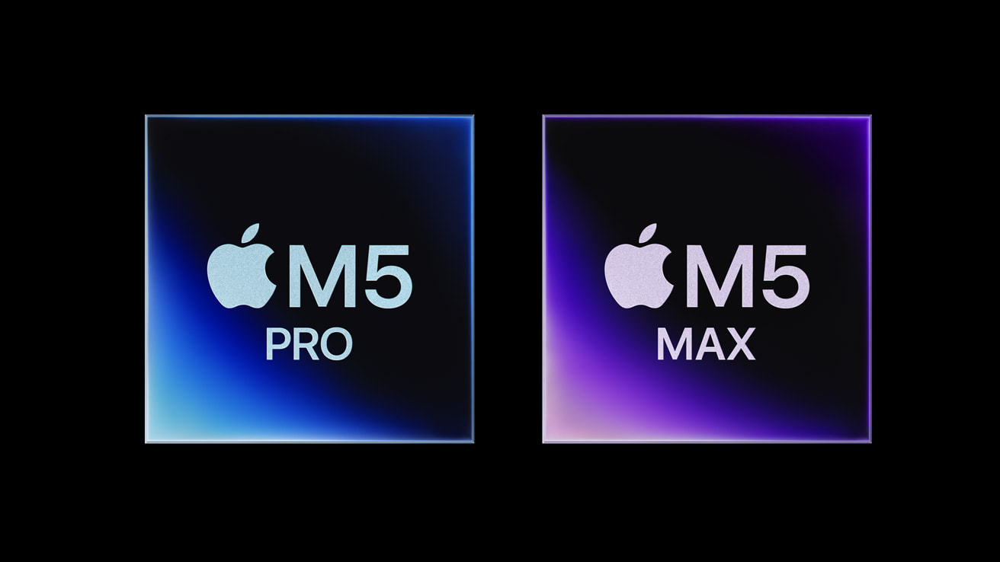
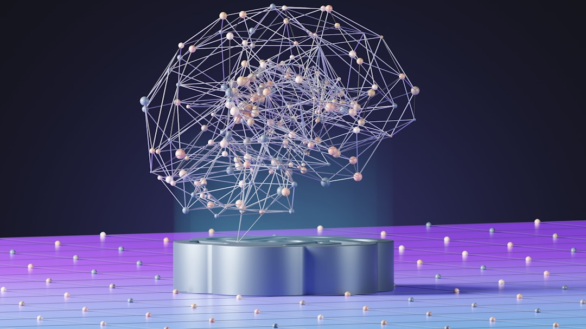
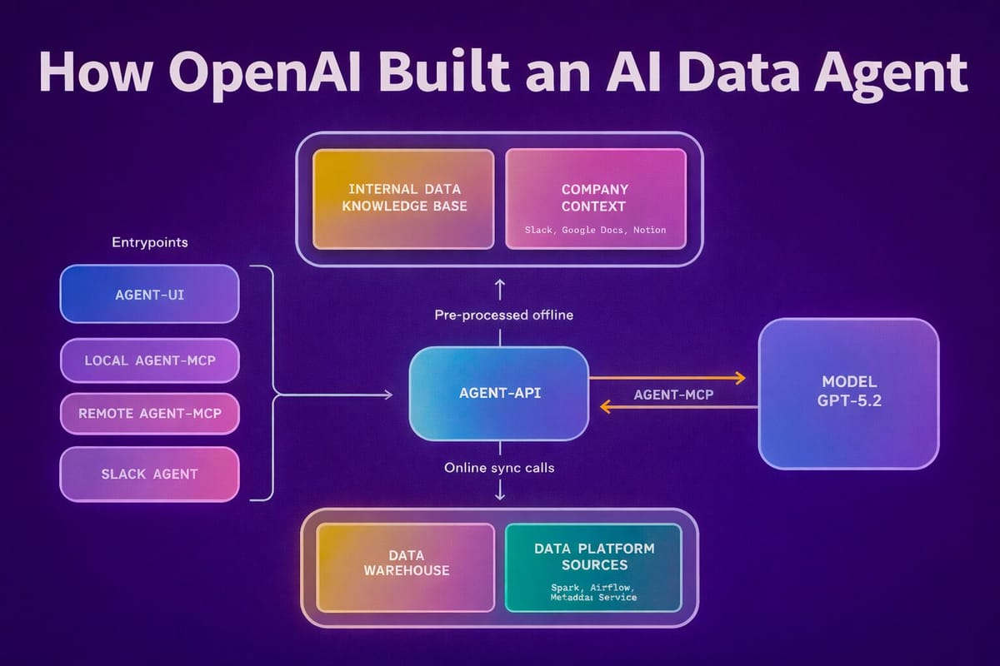
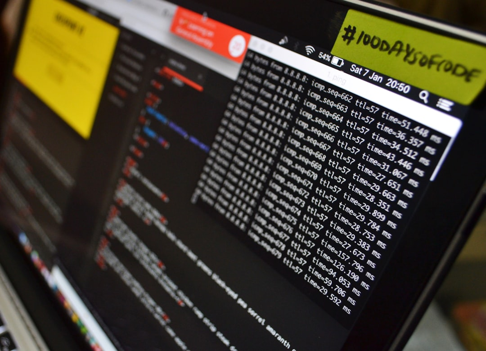
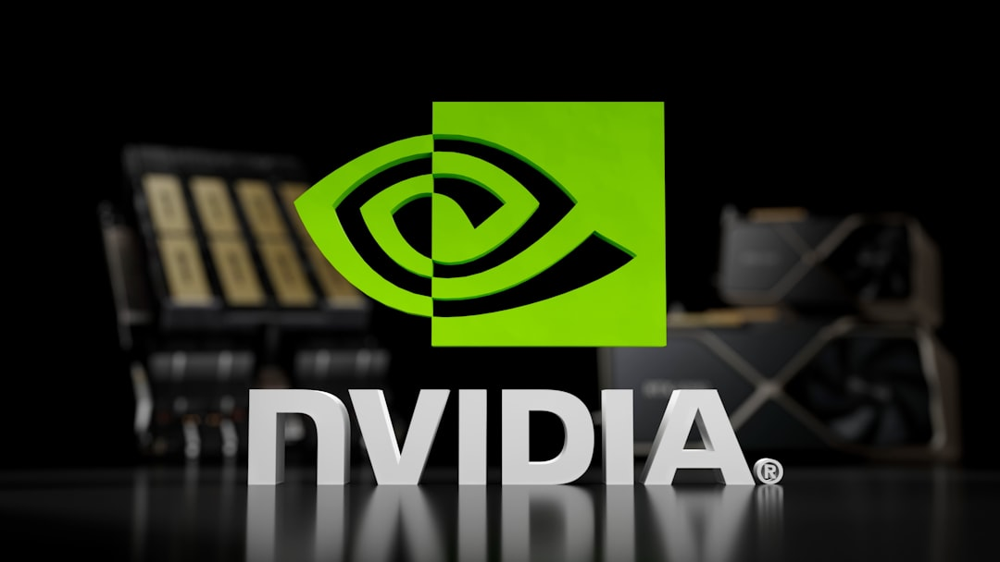
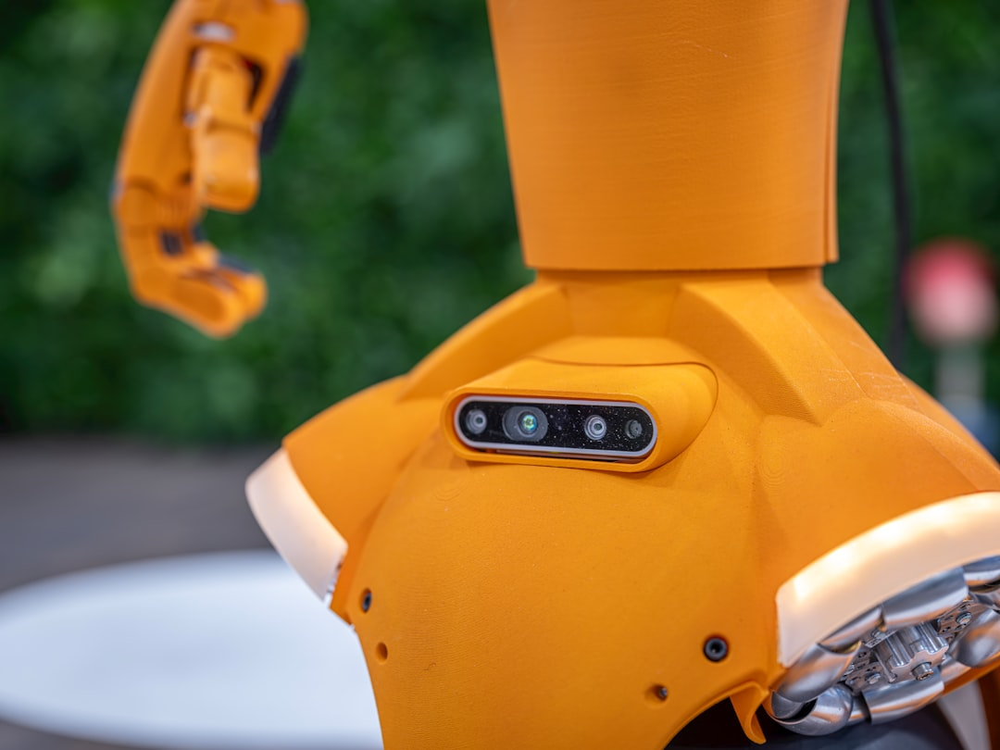
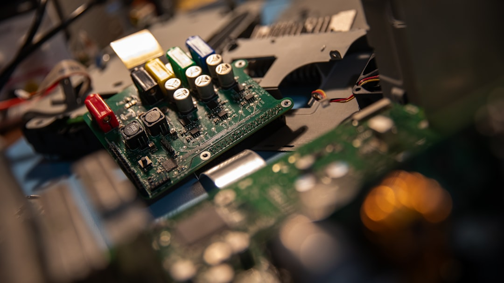

AI DAILY
AI 行业日报
2026年3月4日 · 精选 12 条
01产品发布
苹果发布M5 Pro和M5 Max，融合架构带来全面升级

苹果发布M5 Pro和M5 Max芯片，采用全新Fusion Architecture将两颗芯片裸片合并为单一SoC。两款芯片均搭载18核CPU，含6个超级核心，较上代提升30%性能，驱动新款MacBook Pro，将于3月11日开始发货。
M5 Pro统一内存升至64GB、带宽307GB/s；M5 Max支持128GB内存、带宽614GB/s。GPU最高40核，AI峰值算力是上代4倍以上，图形性能提升20%，光线追踪提升35%，Neural Engine内置于每个GPU核心。
INSIGHT
Fusion Architecture的核心是把Neural Engine塞进每个GPU核心——这不是常规升级，而是在芯片层面重新定义AI推理的执行路径。128GB统一内存意味着本地可以跑700亿参数模型，苹果赌的是"端侧AI"不需要云。
02产品发布
GPT-5.4悄悄泄露，传闻带来200万Token超长上下文
OpenAI编码助手Codex的代码拉取请求中意外出现"GPT-5.4"字样，随后被改回gpt-5.3-codex。此前GitHub提交记录也曾泄露该版本号，显示其将对"GPT-5.4或更新版本"启用原始分辨率图像支持功能。
坊间传闻GPT-5.4将搭载200万Tokens超长上下文窗口，支持全分辨率图像处理，可保留像素级原始图像数据，彻底避免因图像压缩产生的视觉幻觉，为设计师和工程师提供高精度视觉分析能力。
INSIGHT
200万Token上下文如果属实，意味着一次对话可以塞进一整本技术手册。但上下文窗口的有效利用率和推理质量是两回事——Claude的200K和Gemini的100万已经证明，窗口大不等于用得好。
03技术突破
LLM能大规模揭穿匿名账号，网络隐私面临颠覆

最新研究显示，大语言模型可以将匿名社交账号与真实用户身份关联，召回率68%，精确率90%，远超传统去匿名化方法。实验使用了Hacker News、LinkedIn、Reddit和Netflix等多平台数据集。
研究者指出，LLM彻底打破了"匿名账号需要大量人工才能追踪"的传统假设。匿名发言者面临人肉、跟踪和精准画像的风险，互联网假名隐私保护已不再可靠，网络隐私格局面临根本性变化。
INSIGHT
90%精确率意味着LLM做到了人工情报分析师级别的去匿名化，但成本接近零。过去"匿名=安全"的前提是追踪成本高，现在这个成本壁垒被AI抹平了——吹哨人、记者线人、敏感议题讨论者的风险敞口陡增。
04技术突破
AI用5天完成菲尔兹奖数学证明形式化，还纠正了原论文错误

Math Inc.的AI Agent Gauss仅用5天完成了2022年菲尔兹奖成果——8维和24维球体堆积定理——的Lean形式化验证。整个项目生成约20万行代码，是史上最大规模单一目的Lean形式化项目。
Gauss在推理过程中自主发现并修正了原论文的错误：Prop 7中函数b(t)计算缺少一个负号。此前人类专家团队用两年时间仅完成约2万行代码，Gauss将剩余工作从预计6个月压缩到不足两周。
INSIGHT
人类团队两年2万行，AI五天20万行——这是100倍的效率差。但更值得注意的是AI主动纠错：数学证明中一个负号的遗漏足以让整个论证失效，AI发现了人类审稿人没抓住的问题。
05行业动态
OpenAI内部AI数据Agent：2人搭建，每天服务4000员工

OpenAI数据基础设施团队用3个月、2名工程师构建了一个AI数据Agent，70%代码由AI生成。该Agent基于GPT-5.2，可通过Slack接受自然语言问题，自动查询超过7万个数据集，返回图表和分析报告。
该工具目前每天被OpenAI约5000名员工中的4000多人使用，覆盖财务、工程、产品等全部团队。每次查询预计节省2至4小时，更重要的是让非技术人员也能独立完成复杂数据分析。
INSIGHT
2个人搭建、80%采用率、每次省2-4小时——这组数字比任何PPT都有说服力。OpenAI把这个案例公开，意图很明确：证明AI Agent已经是生产力工具，不是实验室demo。
06产品发布
研究发现AI生成代码仅10%既能用又安全

卡内基梅隆、哥伦比亚、约翰斯·霍普金斯大学联合研究发现，主流AI编程助手生成的代码中，约61%功能正确，但其中只有10%同时满足安全要求。安全公司Endor Labs据此推出免费工具AURI，接入Cursor、Claude等AI编程工具。
核心痛点在于AI模型训练于历史开源代码，学会功能实现的同时也学会了历史安全漏洞。每天新发现的漏洞无法及时传递给模型，AURI通过MCP协议将实时安全情报嵌入AI编程流程来弥补这个缺口。
INSIGHT
61%能跑但只有10%安全——这个比例说明AI编程的瓶颈已经从"能不能写"转移到了"写出来的能不能用"。AURI选择MCP协议切入是个聪明的卡位：谁控制了安全层，谁就控制了AI编程的信任链。
07技术突破
英伟达引入Groq的LPU架构，发布专用推理芯片

据报道，英伟达将在3月GTC大会上发布基于Groq LPU架构的AI推理芯片，OpenAI将是第一个客户。此前英伟达以约200亿美元完成对Groq核心技术和团队的整合，这是英伟达首次在核心产品线大规模引入外部架构设计。
LPU采用高密度片上SRAM将数据贴近计算，极大缩短数据路径，理论推理速度最高比GPU快100倍，更适合低延迟decode阶段。随着Agent应用爆发，算力重心从训练转向推理，多家公司正在寻求GPU之外的替代方案。
INSIGHT
英伟达花200亿买Groq，本质是在自我革命：承认GPU不是推理的最优解。训练市场已经被英伟达垄断，但推理市场的规模可能更大——谁的芯片跑Agent更快更便宜，谁拿下一个十年。
08政策监管
微软亚马逊谷歌向移民执法机构供货，总计超5亿美元

Wired调查联邦采购记录发现，自2023年起ICE和CBP分别向微软、亚马逊、谷歌支付合计超5.15亿美元，用于云计算和数据服务。Palantir另获约1.2亿美元，主要用于执法数据平台建设。
微软、亚马逊、谷歌主要通过第三方经销商向执法机构提供云存储，科技巨头有时并不清楚产品最终流向。这些基础设施支撑着学生数据库、刑事案件管理等多类执法系统的日常运行。
INSIGHT
"通过经销商间接供货"的模式让科技公司可以说"我们不知道"——但5亿美元的采购规模不太可能完全在雷达之外。这是一个在商业利益和公众期待之间反复出现的灰色地带。
09行业动态
亚马逊中东数据中心遭无人机袭击，紧急迁移云服务

亚马逊三座位于中东的数据中心在无人机袭击中受损，影响了阿联酋和巴林设施的供电与运行。公司已建议客户将远程计算工作负载迁移至其他地区的AWS服务器，以保障业务连续性。
随着微软、谷歌等科技巨头持续加大对中东地区的AI数据中心投资，这类高耗能基础设施在战争或冲突地区面临的安全风险正引发业界广泛关注。此事件也暴露了云计算"全球部署"策略的地缘脆弱性。
INSIGHT
数据中心过去被视为"安全的后方资产"，但无人机把它变成了可被攻击的前线目标。中东廉价能源和宽松审批曾是建设数据中心的优势——现在这些优势的另一面暴露了出来。
10行业动态
百度App接入OpenClaw两周，四成用户用于整理资讯报告

百度App接入OpenClaw AI Agent仅两周，数据显示超过20%的用户调用其处理投资理财分析，40%用户将其用于整理资讯及生成分析报告，展示出AI Agent在金融信息处理场景的落地势头。
OpenClaw专注金融数据处理，此次接入百度App标志着其进入主流消费级平台。两周内就有明确的用户行为分化——理财分析和资讯整理成为最高频场景，与传统搜索场景形成互补。
INSIGHT
用户自发把AI Agent用在理财分析上，说明"钱"是最强的使用动力。但AI做投资建议的合规边界还很模糊——如果用户因为AI分析亏了钱，责任算百度的、OpenClaw的、还是用户自己的？
11产品发布
荣耀MWC发布Robot Phone，把云台和机械臂塞进了手机
荣耀在MWC 2026发布Robot Phone，将微型相机和4DoF云台系统内置手机，可像人颈部一样追随目标实时转动拍摄。影像方面支持两亿像素、防抖，并与专业摄影机品牌ARRI达成合作。
荣耀同时发布首款消费级人形机器人，能空翻、跳舞、与人互动。CEO李健提出AHI（增强人类智能）理念，计划将人形机器人与手机等终端打通用户数据，标志荣耀从手机厂商向AI终端生态公司转型。
INSIGHT
手机里塞云台和机械臂，听起来像噱头，但荣耀在尝试打破"黑色方块"的手机形态。从功能来看，机械结构让手机摄像头有了物理移动能力——问题是耐用性和成本能不能过消费者这关。
12行业动态
Airbnb联创被拍到用神秘金属设备，疑似OpenAI硬件

Airbnb联创、美国首席设计官Joe Gebbia在旧金山咖啡馆被拍到佩戴金属质感耳机并配有贝壳形碟状配件，视频在X上获超50万次浏览。设备外形与此前Reddit流传的疑似OpenAI硬件广告高度相似。
OpenAI发言人拒绝置评，Gebbia本人也未回应。Wired音频专家认为这可能是开放式耳机，但配件外形与已知型号均不完全匹配。AI生成内容检测软件显示该视频为真实拍摄的概率较高。
INSIGHT
如果OpenAI真的在做硬件，那"首席设计官"在公共场合被拍到用它，很难说不是有意的预热。Jony Ive加入OpenAI后一直在秘密开发AI设备——这可能是第一个实物线索。
由 Zayen知览 整理 · 构建者视角